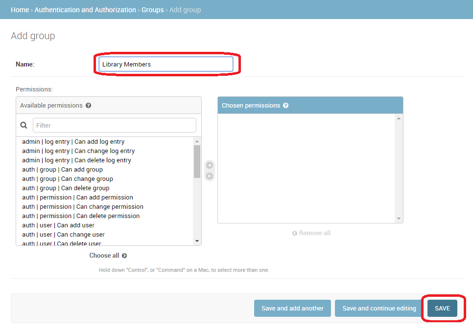
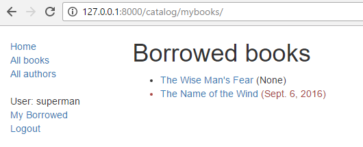
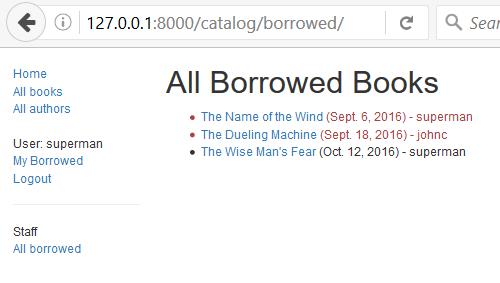

In this tutorial, we'll show you how to allow users to log in to your site with their own accounts, and how to control what they can do and see based on whether or not they are logged in and their permissions. As part of this demonstration, we'll extend the LocalLibrary website, adding login and logout pages, and user- and staff-specific pages for viewing books that have been borrowed.
| Prerequisites: | Complete all previous tutorial topics, up to and including Django Tutorial Part 7: Sessions framework. |
|---|---|
| Objective: | To understand how to set up and use user authentication and permissions. |
Overview
Django provides an authentication and authorization ("permission") system, built on top of the session framework discussed in the previous tutorial, that allows you to verify user credentials and define what actions each user is allowed to perform. The framework includes built-in models for Users and Groups (a generic way of applying permissions to more than one user at a time), permissions/flags that designate whether a user may perform a task, forms and views for logging in users, and view tools for restricting content.
Note: According to Django the authentication system aims to be very generic, and so does not provide some features provided in other web authentication systems. Solutions for some common problems are available as third-party packages. For example, throttling of login attempts and authentication against third parties (e.g. OAuth).
In this tutorial, we'll show you how to enable user authentication in the LocalLibrary website, create your own login and logout pages, add permissions to your models, and control access to pages. We'll use the authentication/permissions to display lists of books that have been borrowed for both users and librarians.
The authentication system is very flexible, and you can build up your URLs, forms, views, and templates from scratch if you like, just calling the provided API to log in the user. However, in this article, we're going to use Django's "stock" authentication views and forms for our login and logout pages. We'll still need to create some templates, but that's pretty easy.
We'll also show you how to create permissions, and check on login status and permissions in both views and templates.
Enabling authentication
The authentication was enabled automatically when we created the skeleton website (in tutorial 2) so you don't need to do anything more at this point.
Note: The necessary configuration was all done for us when we created the app using the django-admin startproject command. The database tables for users and model permissions were created when we first called python manage.py migrate.
The configuration is set up in the INSTALLED_APPS and MIDDLEWARE sections of the project file (locallibrary/locallibrary/settings.py), as shown below:
INSTALLED_APPS = [
...
'django.contrib.auth', #Core authentication framework and its default models.
'django.contrib.contenttypes', #Django content type system (allows permissions to be associated with models).
....
MIDDLEWARE = [
...
'django.contrib.sessions.middleware.SessionMiddleware', #Manages sessions across requests
...
'django.contrib.auth.middleware.AuthenticationMiddleware', #Associates users with requests using sessions.
....
Creating users and groups
You already created your first user when we looked at the Django admin site in tutorial 4 (this was a superuser, created with the command python manage.py createsuperuser). Our superuser is already authenticated and has all permissions, so we'll need to create a test user to represent a normal site user. We'll be using the admin site to create our locallibrary groups and website logins, as it is one of the quickest ways to do so.
Note: You can also create users programmatically, as shown below. You would have to do this, for example, if developing an interface to allow users to create their own logins (you shouldn't give users access to the admin site).
from django.contrib.auth.models import User
# Create user and save to the database
user = User.objects.create_user('myusername', 'myemail@crazymail.com', 'mypassword')
# Update fields and then save again
user.first_name = 'John'
user.last_name = 'Citizen'
user.save()
Below we'll first create a group and then a user. Even though we don't have any permissions to add for our library members yet, if we need to later, it will be much easier to add them once to the group than individually to each member.
Start the development server and navigate to the admin site in your local web browser (http://127.0.0.1:8000/admin/). Login to the site using the credentials for your superuser account. The top level of the Admin site displays all of your models, sorted by "Django application". From the Authentication and Authorisation section, you can click the Users or Groups links to see their existing records.

First lets create a new group for our library members.
- Click the Add button (next to Group) to create a new Group; enter the Name "Library Members" for the group.
- We don't need any permissions for the group, so just press SAVE (you will be taken to a list of groups).
Now let's create a user:
- Navigate back to the home page of the admin site
- Click the Add button next to Users to open the Add user dialogue.

- Enter an appropriate Username and Password/Password confirmation for your test user
- Press SAVE to create the user.
The admin site will create the new user and immediately take you to a Change user screen where you can change your username and add information for the User model's optional fields. These fields include the first name, last name, email address, and the user's status and permissions (only the Active flag should be set). Further down you can specify the user's groups and permissions, and see important dates related to the user (e.g. their join date and last login date).
- In the Groups section, select Library Member group from the list of Available groups, and then press the right-arrow between the boxes to move it into the Chosen groups box.

- We don't need to do anything else here, so just select SAVE again, to go to the list of users.
That's it! Now you have a "normal library member" account that you will be able to use for testing (once we've implemented the pages to enable them to log in).
Note: You should try creating another library member user. Also, create a group for Librarians, and add a user to that too!
Setting up your authentication views
Django provides almost everything you need to create authentication pages to handle login, log out, and password management "out of the box". This includes a URL mapper, views and forms, but it does not include the templates — we have to create our own!
In this section, we show how to integrate the default system into the LocalLibrary website and create the templates. We'll put them in the main project URLs.
Note: You don't have to use any of this code, but it is likely that you'll want to because it makes things a lot easier. You'll almost certainly need to change the form handling code if you change your user model (an advanced topic!) but even so, you would still be able to use the stock view functions.
Note: In this case, we could reasonably put the authentication pages, including the URLs and templates, inside our catalog application. However, if we had multiple applications it would be better to separate out this shared login behaviour and have it available across the whole site, so that is what we've shown here!
Project URLs
Add the following to the bottom of the project urls.py file (locallibrary/locallibrary/urls.py) file:
#Add Django site authentication urls (for login, logout, password management)
urlpatterns += [
path('accounts/', include('django.contrib.auth.urls')),
]
Navigate to the http://127.0.0.1:8000/accounts/ URL (note the trailing forward slash!) and Django will show an error that it could not find this URL, and listing all the URLs it tried. From this you can see the URLs that will work, for example:
Note: Using the above method adds the following URLs with names in square brackets, which can be used to reverse the URL mappings. You don't have to implement anything else — the above URL mapping automatically maps the below mentioned URLs.
accounts/ login/ [name='login']
accounts/ logout/ [name='logout']
accounts/ password_change/ [name='password_change']
accounts/ password_change/done/ [name='password_change_done']
accounts/ password_reset/ [name='password_reset']
accounts/ password_reset/done/ [name='password_reset_done']
accounts/ reset/<uidb64>/<token>/ [name='password_reset_confirm']
accounts/ reset/done/ [name='password_reset_complete']Now try to navigate to the login URL (http://127.0.0.1:8000/accounts/login/). This will fail again, but with an error that tells you that we're missing the required template (registration/login.html) on the template search path. You'll see the following lines listed in the yellow section at the top:
Exception Type: TemplateDoesNotExist Exception Value: registration/login.html
The next step is to create a registration directory on the search path and then add the login.html file.
Template directory
The URLs (and implicitly, views) that we just added expect to find their associated templates in a directory /registration/ somewhere in the templates search path.
For this site, we'll put our HTML pages in the templates/registration/ directory. This directory should be in your project root directory, i.e the same directory as the catalog and locallibrary folders). Please create these folders now.
Note: Your folder structure should now look like the below:
locallibrary (Django project folder)
|_catalog
|_locallibrary
|_templates (new)
|_registration
To make these directories visible to the template loader (i.e. to put this directory in the template search path) open the project settings (/locallibrary/locallibrary/settings.py), and update the TEMPLATES section's 'DIRS' line as shown.
TEMPLATES = [
{
...
'DIRS': [os.path.join(BASE_DIR, 'templates')],
'APP_DIRS': True,
...
Login template
Important: The authentication templates provided in this article are a very basic/slightly modified version of the Django demonstration login templates. You may need to customise them for your own use!
Create a new HTML file called /locallibrary/templates/registration/login.html and give it the following contents:
{% extends "base_generic.html" %}
{% block content %}
{% if form.errors %}
<p>Your username and password didn't match. Please try again.</p>
{% endif %}
{% if next %}
{% if user.is_authenticated %}
<p>Your account doesn't have access to this page. To proceed,
please login with an account that has access.</p>
{% else %}
<p>Please login to see this page.</p>
{% endif %}
{% endif %}
<form method="post" action="{% url 'login' %}">
{% csrf_token %}
<table>
<tr>
<td>{{ form.username.label_tag }}</td>
<td>{{ form.username }}</td>
</tr>
<tr>
<td>{{ form.password.label_tag }}</td>
<td>{{ form.password }}</td>
</tr>
</table>
<input type="submit" value="login" />
<input type="hidden" name="next" value="{{ next }}" />
</form>
{# Assumes you setup the password_reset view in your URLconf #}
<p><a href="{% url 'password_reset' %}">Lost password?</a></p>
{% endblock %}This template shares some similarities with the ones we've seen before — it extends our base template and overrides the content block. The rest of the code is fairly standard form handling code, which we will discuss in a later tutorial. All you need to know for now is that this will display a form in which you can enter your username and password, and that if you enter invalid values you will be prompted to enter correct values when the page refreshes.
Navigate back to the login page (http://127.0.0.1:8000/accounts/login/) once you've saved your template, and you should see something like this:

If you log in using valid credentials, you'll be redirected to another page (by default this will be http://127.0.0.1:8000/accounts/profile/). The problem is that, by default, Django expects that upon logging in you will want to be taken to a profile page, which may or may not be the case. As you haven't defined this page yet, you'll get another error!
Open the project settings (/locallibrary/locallibrary/settings.py) and add the text below to the bottom. Now when you log in you should be redirected to the site homepage by default.
# Redirect to home URL after login (Default redirects to /accounts/profile/)
LOGIN_REDIRECT_URL = '/'
Logout template
If you navigate to the logout URL (http://127.0.0.1:8000/accounts/logout/) then you'll see some odd behaviour — your user will be logged out sure enough, but you'll be taken to the Admin logout page. That's not what you want, if only because the login link on that page takes you to the Admin login screen (and that is only available to users who have the is_staff permission).
Create and open /locallibrary/templates/registration/logged_out.html. Copy in the text below:
{% extends "base_generic.html" %}
{% block content %}
<p>Logged out!</p>
<a href="{% url 'login'%}">Click here to login again.</a>
{% endblock %}This template is very simple. It just displays a message informing you that you have been logged out, and provides a link that you can press to go back to the login screen. If you go to the logout URL again you should see this page:

Password reset templates
The default password reset system uses email to send the user a reset link. You need to create forms to get the user's email address, send the email, allow them to enter a new password, and to note when the whole process is complete.
The following templates can be used as a starting point.
Password reset form
This is the form used to get the user's email address (for sending the password reset email). Create /locallibrary/templates/registration/password_reset_form.html, and give it the following contents:
{% extends "base_generic.html" %}
{% block content %}
<form action="" method="post">
{% csrf_token %}
{% if form.email.errors %}
{{ form.email.errors }}
{% endif %}
<p>{{ form.email }}</p>
<input type="submit" class="btn btn-default btn-lg" value="Reset password">
</form>
{% endblock %}
Password reset done
This form is displayed after your email address has been collected. Create /locallibrary/templates/registration/password_reset_done.html, and give it the following contents:
{% extends "base_generic.html" %}
{% block content %}
<p>We've emailed you instructions for setting your password. If they haven't arrived in a few minutes, check your spam folder.</p>
{% endblock %}
Password reset email
This template provides the text of the HTML email containing the reset link that we will send to users. Create /locallibrary/templates/registration/password_reset_email.html, and give it the following contents:
Someone asked for password reset for email {{ email }}. Follow the link below:
{{ protocol}}://{{ domain }}{% url 'password_reset_confirm' uidb64=uid token=token %}
Password reset confirm
This page is where you enter your new password after clicking the link in the password reset email. Create /locallibrary/templates/registration/password_reset_confirm.html, and give it the following contents:
{% extends "base_generic.html" %}
{% block content %}
{% if validlink %}
<p>Please enter (and confirm) your new password.</p>
<form action="" method="post">
{% csrf_token %}
<table>
<tr>
<td>{{ form.new_password1.errors }}
<label for="id_new_password1">New password:</label></td>
<td>{{ form.new_password1 }}</td>
</tr>
<tr>
<td>{{ form.new_password2.errors }}
<label for="id_new_password2">Confirm password:</label></td>
<td>{{ form.new_password2 }}</td>
</tr>
<tr>
<td></td>
<td><input type="submit" value="Change my password" /></td>
</tr>
</table>
</form>
{% else %}
<h1>Password reset failed</h1>
<p>The password reset link was invalid, possibly because it has already been used. Please request a new password reset.</p>
{% endif %}
{% endblock %}
Password reset complete
This is the last password-reset template, which is displayed to notify you when the password reset has succeeded. Create /locallibrary/templates/registration/password_reset_complete.html, and give it the following contents:
{% extends "base_generic.html" %}
{% block content %}
<h1>The password has been changed!</h1>
<p><a href="{% url 'login' %}">log in again?</a></p>
{% endblock %}Testing the new authentication pages
Now that you've added the URL configuration and created all these templates, the authentication pages should now just work!
You can test the new authentication pages by attempting to log in to and then log out of your superuser account using these URLs:
You'll be able to test the password reset functionality from the link in the login page. Be aware that Django will only send reset emails to addresses (users) that are already stored in its database!
Note: The password reset system requires that your website supports email, which is beyond the scope of this article, so this part won't work yet. To allow testing, put the following line at the end of your settings.py file. This logs any emails sent to the console (so you can copy the password reset link from the console).
EMAIL_BACKEND = 'django.core.mail.backends.console.EmailBackend'
For more information, see Sending email (Django docs).
Testing against authenticated users
This section looks at what we can do to selectively control content the user sees based on whether they are logged in or not.
Testing in templates
You can get information about the currently logged in user in templates with the {{ user }} template variable (this is added to the template context by default when you set up the project as we did in our skeleton).
Typically you will first test against the {{ user.is_authenticated }} template variable to determine whether the user is eligible to see specific content. To demonstrate this, next we'll update our sidebar to display a "Login" link if the user is logged out, and a "Logout" link if they are logged in.
Open the base template (/locallibrary/catalog/templates/base_generic.html) and copy the following text into the sidebar block, immediately before the endblock template tag.
<ul class="sidebar-nav">
...
{% if user.is_authenticated %}
<li>User: {{ user.get_username }}</li>
<li><a href="{% url 'logout'%}?next={{request.path}}">Logout</a></li>
{% else %}
<li><a href="{% url 'login'%}?next={{request.path}}">Login</a></li>
{% endif %}
</ul>
As you can see, we use if-else-endif template tags to conditionally display text based on whether {{ user.is_authenticated }} is true. If the user is authenticated then we know that we have a valid user, so we call {{ user.get_username }} to display their name.
We create the login and logout link URLs using the url template tag and the names of the respective URL configurations. Note also how we have appended ?next={{request.path}} to the end of the URLs. What this does is add a URL parameter next containing the address (URL) of the current page, to the end of the linked URL. After the user has successfully logged in/out, the views will use this "next" value to redirect the user back to the page where they first clicked the login/logout link.
Note: Try it out! If you're on the home page and you click Login/Logout in the sidebar, then after the operation completes you should end up back on the same page.
Testing in views
If you're using function-based views, the easiest way to restrict access to your functions is to apply the login_required decorator to your view function, as shown below. If the user is logged in then your view code will execute as normal. If the user is not logged in, this will redirect to the login URL defined in the project settings (settings.LOGIN_URL), passing the current absolute path as the next URL parameter. If the user succeeds in logging in then they will be returned back to this page, but this time authenticated.
from django.contrib.auth.decorators import login_required
@login_required
def my_view(request):
...Note: You can do the same sort of thing manually by testing on request.user.is_authenticated, but the decorator is much more convenient!
Similarly, the easiest way to restrict access to logged-in users in your class-based views is to derive from LoginRequiredMixin. You need to declare this mixin first in the superclass list, before the main view class.
from django.contrib.auth.mixins import LoginRequiredMixin
class MyView(LoginRequiredMixin, View):
...This has exactly the same redirect behaviour as the login_required decorator. You can also specify an alternative location to redirect the user to if they are not authenticated (login_url), and a URL parameter name instead of "next" to insert the current absolute path (redirect_field_name).
class MyView(LoginRequiredMixin, View):
login_url = '/login/'
redirect_field_name = 'redirect_to'
For additional detail, check out the Django docs here.
Example — listing the current user's books
Now that we know how to restrict a page to a particular user, let's create a view of the books that the current user has borrowed.
Unfortunately, we don't yet have any way for users to borrow books! So before we can create the book list we'll first extend the BookInstance model to support the concept of borrowing and use the Django Admin application to loan a number of books to our test user.
Models
First, we're going to have to make it possible for users to have a BookInstance on loan (we already have a status and a due_back date, but we don't yet have any association between this model and a User. We'll create one using a ForeignKey (one-to-many) field. We also need an easy mechanism to test whether a loaned book is overdue.
Open catalog/models.py, and import the User model from django.contrib.auth.models (add this just below the previous import line at the top of the file, so User is available to subsequent code that makes use of it):
from django.contrib.auth.models import User
Next, add the borrower field to the BookInstance model:
borrower = models.ForeignKey(User, on_delete=models.SET_NULL, null=True, blank=True)
While we're here, let's add a property that we can call from our templates to tell if a particular book instance is overdue. While we could calculate this in the template itself, using a property as shown below will be much more efficient.
Add this somewhere near the top of the file:
from datetime import dateNow add the following property definition to the BookInstance class:
@property
def is_overdue(self):
if self.due_back and date.today() > self.due_back:
return True
return FalseNote: We first verify whether due_back is empty before making a comparison. An empty due_back field would cause Django to throw an error instead of showing the page: empty values are not comparable. This is not something we would want our users to experience!
Now that we've updated our models, we'll need to make fresh migrations on the project and then apply those migrations:
python3 manage.py makemigrations
python3 manage.py migrate
Admin
Now open catalog/admin.py, and add the borrower field to the BookInstanceAdmin class in both the list_display and the fieldsets as shown below. This will make the field visible in the Admin section, allowing us to assign a User to a BookInstance when needed.
@admin.register(BookInstance)
class BookInstanceAdmin(admin.ModelAdmin):
list_display = ('book', 'status', 'borrower', 'due_back', 'id')
list_filter = ('status', 'due_back')
fieldsets = (
(None, {
'fields': ('book','imprint', 'id')
}),
('Availability', {
'fields': ('status', 'due_back','borrower')
}),
)
Loan a few books
Now that it's possible to loan books to a specific user, go and loan out a number of BookInstance records. Set their borrowed field to your test user, make the status "On loan", and set due dates both in the future and the past.
Note: We won't spell the process out, as you already know how to use the Admin site!
On loan view
Now we'll add a view for getting the list of all books that have been loaned to the current user. We'll use the same generic class-based list view we're familiar with, but this time we'll also import and derive from LoginRequiredMixin, so that only a logged in user can call this view. We will also choose to declare a template_name, rather than using the default, because we may end up having a few different lists of BookInstance records, with different views and templates.
Add the following to catalog/views.py:
from django.contrib.auth.mixins import LoginRequiredMixin
class LoanedBooksByUserListView(LoginRequiredMixin,generic.ListView):
"""Generic class-based view listing books on loan to current user."""
model = BookInstance
template_name ='catalog/bookinstance_list_borrowed_user.html'
paginate_by = 10
def get_queryset(self):
return BookInstance.objects.filter(borrower=self.request.user).filter(status__exact='o').order_by('due_back')In order to restrict our query to just the BookInstance objects for the current user, we re-implement get_queryset() as shown above. Note that "o" is the stored code for "on loan" and we order by the due_back date so that the oldest items are displayed first.
URL conf for on loan books
Now open /catalog/urls.py and add a path() pointing to the above view (you can just copy the text below to the end of the file).
urlpatterns += [
path('mybooks/', views.LoanedBooksByUserListView.as_view(), name='my-borrowed'),
]Template for on-loan books
Now, all we need to do for this page is add a template. First, create the template file /catalog/templates/catalog/bookinstance_list_borrowed_user.html and give it the following contents:
{% extends "base_generic.html" %}
{% block content %}
<h1>Borrowed books</h1>
{% if bookinstance_list %}
<ul>
{% for bookinst in bookinstance_list %}
<li class="{% if bookinst.is_overdue %}text-danger{% endif %}">
<a href="{% url 'book-detail' bookinst.book.pk %}">{{bookinst.book.title}}</a> ({{ bookinst.due_back }})
</li>
{% endfor %}
</ul>
{% else %}
<p>There are no books borrowed.</p>
{% endif %}
{% endblock %}This template is very similar to those we've created previously for the Book and Author objects. The only thing "new" here is that we check the method we added in the model (bookinst.is_overdue) and use it to change the colour of overdue items.
When the development server is running, you should now be able to view the list for a logged in user in your browser at http://127.0.0.1:8000/catalog/mybooks/. Try this out with your user logged in and logged out (in the second case, you should be redirected to the login page).
Add the list to the sidebar
The very last step is to add a link for this new page into the sidebar. We'll put this in the same section where we display other information for the logged in user.
Open the base template (/locallibrary/catalog/templates/base_generic.html) and add the line in bold to the sidebar as shown.
<ul class="sidebar-nav">
{% if user.is_authenticated %}
<li>User: {{ user.get_username }}</li>
<li><a href="{% url 'my-borrowed' %}">My Borrowed</a></li>
<li><a href="{% url 'logout'%}?next={{request.path}}">Logout</a></li>
{% else %}
<li><a href="{% url 'login'%}?next={{request.path}}">Login</a></li>
{% endif %}
</ul>
What does it look like?
When any user is logged in, they'll see the My Borrowed link in the sidebar, and the list of books displayed as below (the first book has no due date, which is a bug we hope to fix in a later tutorial!).

Permissions
Permissions are associated with models and define the operations that can be performed on a model instance by a user who has the permission. By default, Django automatically gives add, change, and delete permissions to all models, which allow users with the permissions to perform the associated actions via the admin site. You can define your own permissions to models and grant them to specific users. You can also change the permissions associated with different instances of the same model.
Testing on permissions in views and templates is then very similar for testing on the authentication status (and in fact, testing for a permission also tests for authentication).
Models
Defining permissions is done on the model "class Meta" section, using the permissions field. You can specify as many permissions as you need in a tuple, each permission itself being defined in a nested tuple containing the permission name and permission display value. For example, we might define a permission to allow a user to mark that a book has been returned as shown:
class BookInstance(models.Model):
...
class Meta:
...
permissions = (("can_mark_returned", "Set book as returned"),)
We could then assign the permission to a "Librarian" group in the Admin site.
Open the catalog/models.py, and add the permission as shown above. You will need to re-run your migrations (call python3 manage.py makemigrations and python3 manage.py migrate) to update the database appropriately.
Templates
The current user's permissions are stored in a template variable called {{ perms }}. You can check whether the current user has a particular permission using the specific variable name within the associated Django "app" — e.g. {{ perms.catalog.can_mark_returned }} will be True if the user has this permission, and False otherwise. We typically test for the permission using the template {% if %} tag as shown:
{% if perms.catalog.can_mark_returned %}
<!-- We can mark a BookInstance as returned. -->
<!-- Perhaps add code to link to a "book return" view here. -->
{% endif %}
Views
Permissions can be tested in function view using the permission_required decorator or in a class-based view using the PermissionRequiredMixin. The pattern and behaviour are the same as for login authentication, though of course, you might reasonably have to add multiple permissions.
Function view decorator:
from django.contrib.auth.decorators import permission_required
@permission_required('catalog.can_mark_returned')
@permission_required('catalog.can_edit')
def my_view(request):
...A permission-required mixin for class-based views.
from django.contrib.auth.mixins import PermissionRequiredMixin
class MyView(PermissionRequiredMixin, View):
permission_required = 'catalog.can_mark_returned'
# Or multiple permissions
permission_required = ('catalog.can_mark_returned', 'catalog.can_edit')
# Note that 'catalog.can_edit' is just an example
# the catalog application doesn't have such permission!Example
We won't update the LocalLibrary here; perhaps in the next tutorial!
Challenge yourself
Earlier in this article, we showed you how to create a page for the current user listing the books that they have borrowed. The challenge now is to create a similar page that is only visible for librarians, that displays all books that have been borrowed, and which includes the name of each borrower.
You should be able to follow the same pattern as for the other view. The main difference is that you'll need to restrict the view to only librarians. You could do this based on whether the user is a staff member (function decorator: staff_member_required, template variable: user.is_staff) but we recommend that you instead use the can_mark_returned permission and PermissionRequiredMixin, as described in the previous section.
Important: Remember not to use your superuser for permissions based testing (permission checks always return true for superusers, even if a permission has not yet been defined!). Instead, create a librarian user, and add the required capability.
When you are finished, your page should look something like the screenshot below.

Summary
Excellent work — you've now created a website that library members can log in into and view their own content and that librarians (with the correct permission) can use to view all loaned books and their borrowers. At the moment we're still just viewing content, but the same principles and techniques are used when you want to start modifying and adding data.
In our next article, we'll look at how you can use Django forms to collect user input, and then start modifying some of our stored data.
See also
- User authentication in Django (Django docs)
- Using the (default) Django authentication system (Django docs)
- Introduction to class-based views > Decorating class-based views (Django docs)
In this module
- Django introduction
- Setting up a Django development environment
- Django Tutorial: The Local Library website
- Django Tutorial Part 2: Creating a skeleton website
- Django Tutorial Part 3: Using models
- Django Tutorial Part 4: Django admin site
- Django Tutorial Part 5: Creating our home page
- Django Tutorial Part 6: Generic list and detail views
- Django Tutorial Part 7: Sessions framework
- Django Tutorial Part 8: User authentication and permissions
- Django Tutorial Part 9: Working with forms
- Django Tutorial Part 10: Testing a Django web application
- Django Tutorial Part 11: Deploying Django to production
- Django web application security
- DIY Django mini blog